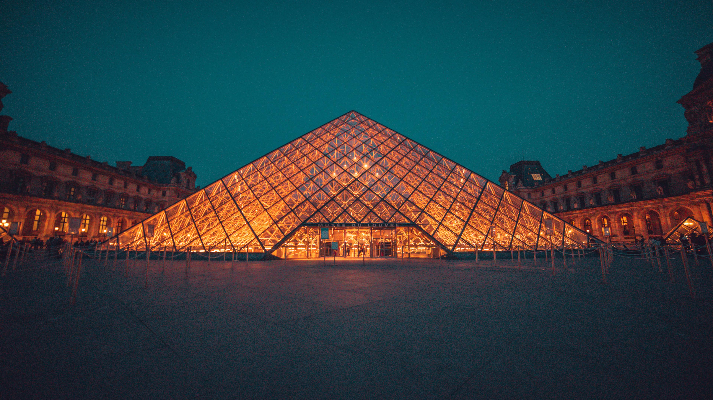
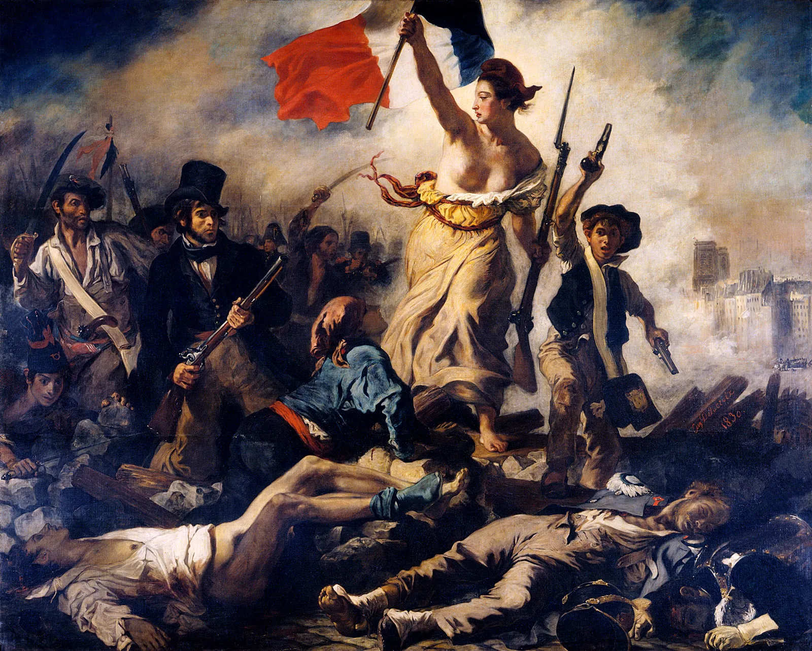
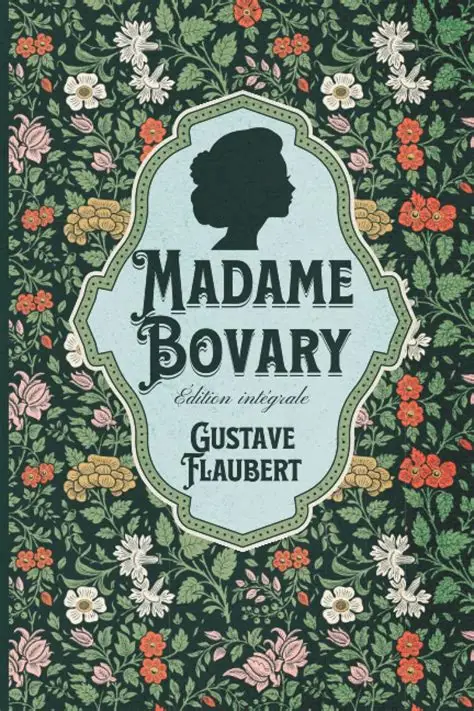

A cultura da França é uma das mais influentes e admiradas do mundo, marcada por uma rica história, diversidade de tradições e forte valorização das artes. Desde a literatura e a filosofia até a moda, a gastronomia e o cinema, o país se destaca por seu refinamento e criatividade. Ao longo dos séculos, a França construiu uma identidade cultural única, que combina tradição e modernidade, encantando pessoas de diferentes partes do mundo e exercendo grande impacto na cultura global.
Explore os icônicos quadros da França

A Liberdade Guiando o Povo (La Liberté guidant le peuple) – Eugène Delacroix (1830) Obra-prima do Romantismo francês, simboliza a Revolução de Julho de 1830. A figura de Marianne (mulher com a bandeira tricolor) se tornou ícone da França e da luta pela liberdade. Está no Louvre, em Paris.
.webp)
Impression, Sunrise (Impression, soleil levant) – Claude Monet (1872) Deu origem ao nome do movimento Impressionismo. Pintada no porto de Le Havre, revolucionou a arte ao focar na luz e na impressão momentânea. Está no Musée Marmottan Monet, em Paris.
.webp)
O Raft da Medusa (Le Radeau de la Méduse) Théodore Géricault (1819) Ícone do Romantismo, retrata o drama real do naufrágio da fragata Medusa (1816), com canibalismo e desespero. Chocou o público e criticou o governo. Está no Louvre.
Culinaria A culinária da França é uma verdadeira arte, onde tradição, sabor e sofisticação se encontram em cada prato.

Boeuf Bourguignon (Carne bovina à moda da Borgonha)
Ensopado rico de carne cozida lentamente no vinho tinto da Borgonha, com cogumelos..
Ver receitaCoq au Vin (Galo no vinho)
Frango marinado e cozido em vinho tinto, com cogumelos, cebolas pérola, bacon e ervas. Ícone do slow cooking francês, originário da Borgonha...
Ver receita
Escargots à la Bourguignonne
(Caracóis à moda da Borgonha)
Caracóis preparados com manteiga, alho, salsa e ervas,
Ver receitaLiteratura:
A literatura francesa é uma das mais influentes do mundo, com uma rica tradição que se estende desde as epopeias medievais até as experimentações contemporâneas. Autores como Molière, Victor Hugo, Flaubert e Proust são ícones universais, e suas obras refletem a evolução estética e as transformações sociais da França e do mundo. A literatura francesa é caracterizada por sua inovação linguística, engajamento filosófico e riqueza temática, abordando uma ampla gama de questões humanas.

Les Misérables
Se existe uma obra que simboliza a literatura francesa, é Les Misérables. Publicado em 1862, o romance de Victor Hugo é muito mais do que a história de Jean Valjean,IX...
Ver Mais
Madame Bovary
Madame Bovary (Madame Bovary) é um romance de Gustave Flaubert publicado em 1857. É considerado um dos maiores romances da literatura francesa e uma obra-prima do realismo...
Ver Mais
Gargântua e Pantagruel:
"Gargantua e Pantagruel" é uma série de cinco livros escrita por François Rabelais, que narra as aventuras dos gigantes Gargântua e seu filho Pantagruel. As histórias satirizam os costumes da França do século XVI, repletas de trocadilhos...
Ver Mais